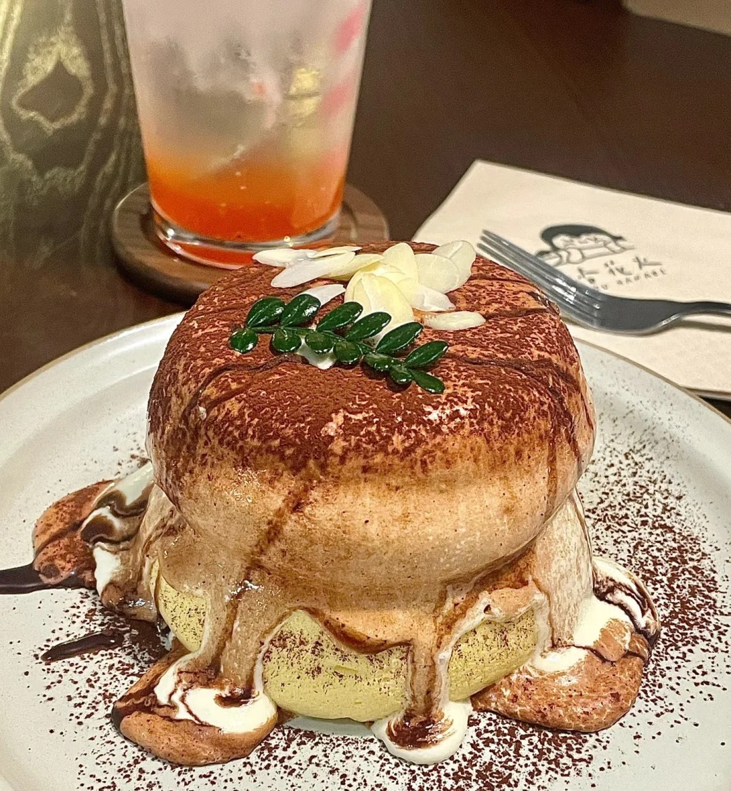
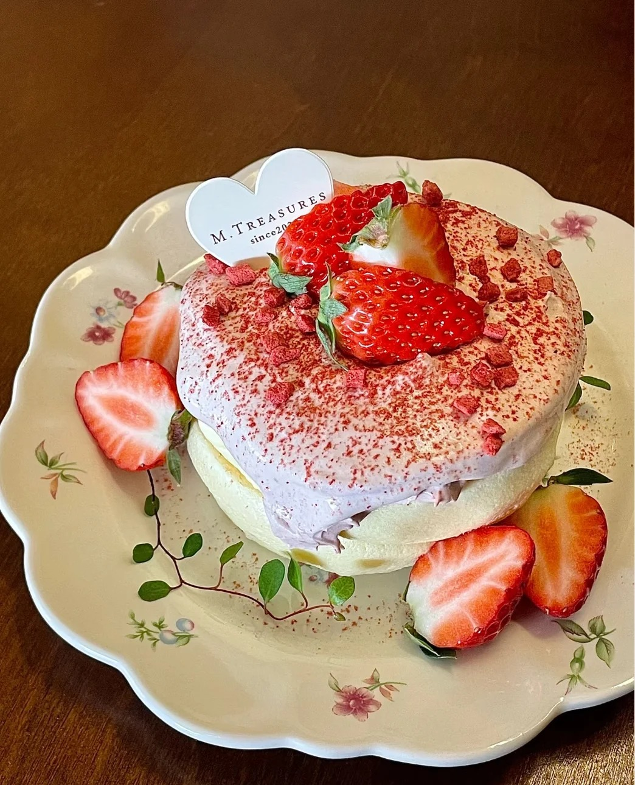

舒芙蕾



舒芙蕾（Soufflé）是一种源自法国的经典甜品。“Soufflé” 来自法语动词 “souffler”，意思是 “使充气” 或 “蓬松地胀起来”，这恰如其分地描述了舒芙蕾烘焙时的状态。口感蓬松轻盈，入口即化，像含住了一口充满空气的 “泡沫”，带有浓郁的蛋香和香甜味道。制作方法以经典甜味舒芙蕾为例，首先要用黄油涂抹烤碗内壁，再撒一层细砂糖。然后将黄油融化，加入面粉炒至微黄，分次倒入热牛奶搅拌成糊状，离火后加入蛋黄和香草精混合均匀。接着，在蛋白中加入柠檬汁，分次加糖打发至硬性发泡。最后把 1/3 蛋白霜拌入面糊，再倒回剩余蛋白霜中轻柔翻拌，倒入模具至 8 分满，放入预热好的烤箱中烘烤。 舒芙蕾是 18 世纪晚期法国人的发明。有说法认为，博维利耶可能早在 1782 年就开始制作舒芙蕾。1813 年，路易斯・乌德的《法国厨师》一书中出现了各种舒芙蕾的食谱。1841 年，卡雷姆的《巴黎皇家糕点师》则详细介绍了制作舒芙蕾的技巧。
制作方法：